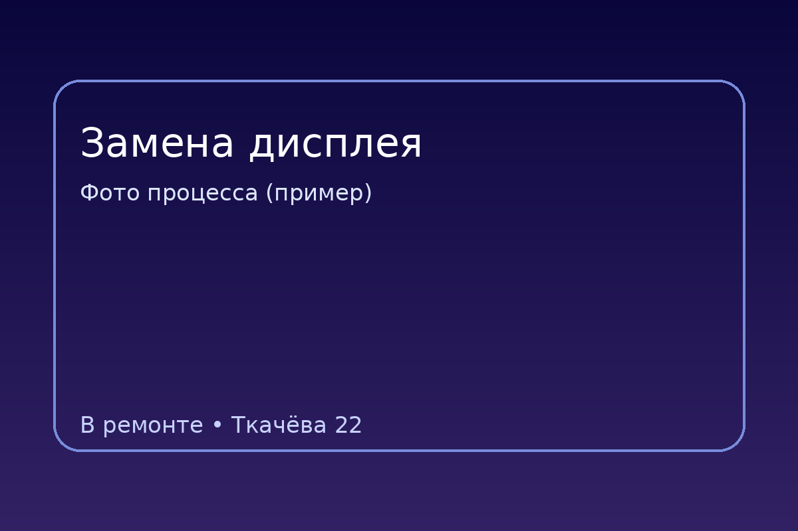
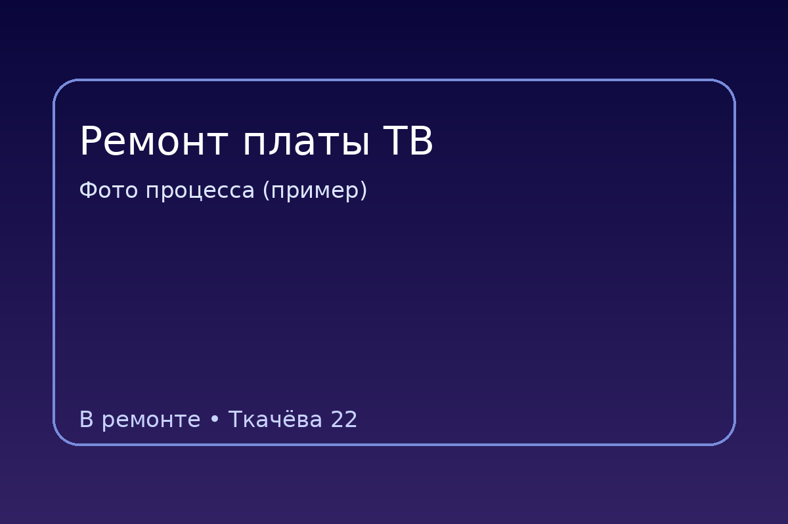
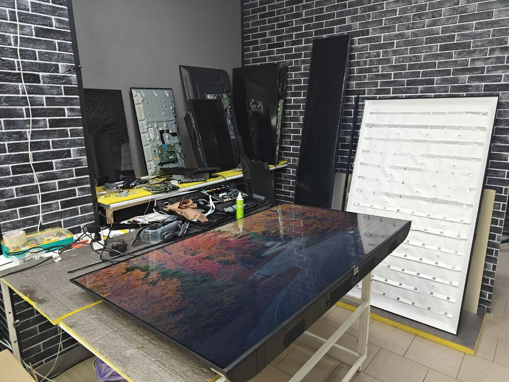

📱Телефоны
- Замена дисплея — от 30–90 минут
- Аккумулятор / разъём / динамик — 30–120 минут
- После влаги — по результатам диагностики
От чего зависят сроки ремонта: сложность, запчасти, очередь. Ростов-на-Дону, Ткачёва 22.
По типовым работам часто делаем в день обращения, но сложные случаи требуют больше времени.
Это ориентиры — точный срок зависит от модели, наличия запчастей и необходимости тестирования после ремонта.
Чтобы было понятно, как это выглядит в реальности — показываем примеры процесса.


Да. Срочные работы выполняем в приоритете, если есть запчасти и ремонт типовой. Напишите модель и проблему — скажем реальный срок.
Чаще всего из-за поставки запчастей или необходимости длительного тестирования после ремонта. Мы всегда предупреждаем и согласовываем.
После диагностики. До диагностики даём ориентир по опыту, но точный срок зависит от конкретной неисправности.
Коротко показываем типовой процесс — чтобы было понятно, что именно мы делаем и за что платите.

Проверяем устройство и определяем точную причину неисправности.
Выполняем ремонт/замену узлов по согласованию с вами.
Проверяем результат, оформляем гарантию и рекомендации по эксплуатации.